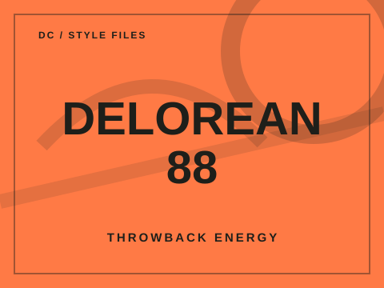
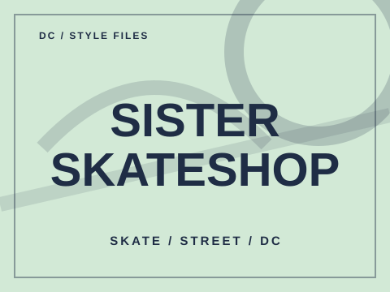

Style stop / 01
Joint Custody
Vinyl, vintage tees, and old-school sportswear share space here. A stop for digging around and finding something with character.
1530 U St NW, Washington, DCVisit shop websiteVinyl, vintage tees, and old-school sportswear share space here. A stop for digging around and finding something with character.
1530 U St NW, Washington, DCVisit shop website
A throwback-focused vintage stop for clothing and sneakers. The kind of place to check when you want a piece nobody else has.
U Street area, Washington, DCFind shop on map
Skate culture meets everyday street style, from boards and accessories to clothes with an edge.
U Street area, Washington, DCFind shop on mapThe layout, shop cards, and navigation are in place. Illustrations are original design-stage artwork, not storefront photos. Store availability, location, and details should be verified before visiting.